Como sugestão, configure a opção de leitura de caracteres e de pontuação de seu leitor de tela para o grau máximo de leitura, a fim de que os códigos disponibilizados neste material sejam lidos corretamente. No caso do NVDA (NonVisual Desktop Access), para localizar a opção Grau de pontuação/símbolos, acesse Preferências – Configurações – Fala. Altere o padrão Pouco para Tudo. Dessa forma, o leitor passará a ler os segmentos de código em sua totalidade.
O versionamento de código é o procedimento de controle e salvamento das diversas versões dos arquivos que compõem um sistema, ou seja, os diferentes arquivos de uma aplicação são salvos a cada alteração. Essa ação permite o controle e a recuperação dos dados a cada etapa do desenvolvimento do software.
Deve-se enxergar o desenvolvimento de um projeto como um processo que é dividido em várias etapas, e quando se fala em projetos relacionados a aplicações (softwares) não é diferente. Ao passo que um sistema vai sendo desenvolvido, diversas funcionalidades são implementadas, para cumprirmos os objetivos finais da aplicação, porém essas funcionalidades não são estáticas, ou seja, podem sofrer alterações.
Sendo assim, quando o programador executa melhorias, altera ou desenvolve uma nova funcionalidade, as versões anteriores dos arquivos do sistema devem estar guardadas de maneira organizada, prática e segura. Tal ação permite o controle e a recuperação das versões anteriores dos arquivos de um software, justificando, assim, a importância do versionamento de código em um projeto.
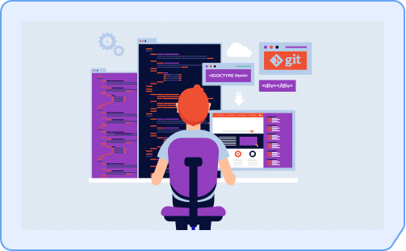Clique ou toque para ampliar.
Figura 1 – Versionamento
Fonte: Ariane G. (2023)
A figura apresenta uma ilustração de um programador com as diversas versões dos arquivos que compõem um sistema de forma ilustrativa cartonizada, executando, assim, o versionamento da aplicação.
De maneira geral e específica, o versionamento de códigos em uma equipe evita, de forma eficiente, grande parte dos conflitos durante o desenvolvimento de uma aplicação. Nesse cenário, é possível entender conflitos como todos aqueles problemas que a manipulação de um mesmo arquivo por mais de uma pessoa pode causar, prejudicando de alguma maneira o processo de desenvolvimento de software. Porém, ainda há muitos outros benefícios obtidos pela utilização correta do versionamento do software.
A otimização do trabalho de uma equipe ocorre de maneira natural, a partir do momento em que os conflitos de trabalhar em um mesmo projeto simultaneamente são evitados. As alterações são mantidas de forma controlada e ágil, permitindo que um mesmo arquivo, por exemplo, seja alterado ao mesmo tempo por mais de um desenvolvedor, por meio de comandos que permitem esse controle, os quais serão vistos no decorrer deste conteúdo.
Outro ponto importante a ressaltar é a significativa melhoria na segurança do projeto, uma vez que é natural a ocorrência de erros no processo de alteração de arquivos e implementação de novas funcionalidades. Ao realizar o controle de versão, é possível retornar o arquivo a uma versão anterior ao erro apresentado.
Para enxergar de forma prática como o versionamento de software pode ser relevante em uma equipe, durante as etapas do desenvolvimento de um projeto, pense no exemplo a seguir.
Você fez o download do repositório inicial do projeto e começou a executar alterações nos arquivos, implementando funcionalidades e melhorias. Porém, nesse mesmo período de tempo, outro desenvolvedor fez alterações nos mesmos arquivos que você e atualizou o servidor com esses novos arquivos. Quando você for enviar a sua versão, a ferramenta de controle de versão emitirá um alerta sobre o ocorrido e será possível mesclar as duas versões, mostrando as alterações e onde elas ocorreram. Assim, as mudanças poderão ser executadas com total liberdade e consciência do programador.
Veja, a seguir, um segundo exemplo, porém ainda utilizando o primeiro como base.
Pense que, após as alterações serem concluídas, os arquivos foram mesclados e implementados. Na etapa de testes, verificou-se que as melhorias feitas nesse arquivo estavam ocasionando um problema de segurança dentro do sistema, havendo, assim, a necessidade de retornar à versão anterior do arquivo em questão, ou seja, antes de essa funcionalidade ser implementada. Se o controle de versão do software foi feito de maneira correta, essa situação não será um problema, visto que o histórico do arquivo é acessível, assim como o retorno a versões anteriores.
Por ser um processo contínuo que deve ocorrer durante toda a construção do sistema, a cada alteração significativa, o versionamento de código muitas vezes ocorre por meio do próprio ambiente de programação (IDE, sigla para integrated development environment, em português ambiente de desenvolvimento integrado), e grande parte das interfaces de programação mais utilizadas atualmente possibilita essa funcionalidade de versionamento integrado.
Vale ressaltar que o controle de versões também pode ser feito por meio do terminal do sistema operacional, ou por interface gráfica, se a ferramenta utilizada disponibilizar essa funcionalidade.
Porém, para realizar o versionamento de código, é necessário o uso de ferramentas específicas, as denominadas ferramentas de controle de versão de software. Atualmente, as ferramentas de controle de software podem ser classificadas em dois grupos, os sistemas centralizados e os sistemas distribuídos.
No sistema centralizado, o servidor ao qual o projeto está alocado é o único repositório central. É um sistema comum e popularmente utilizado em redes locais, visto que é capaz de suprir com eficiência as necessidades da maior parte das equipes. Esse sistema utiliza a arquitetura cliente-servidor, ou seja, primeiro os arquivos acessam o servidor para depois poderem comunicar-se. Costuma manter uma veloz e boa comunicação de dados.
A figura a seguir demonstra o controle de versão por meio de um sistema centralizado, no qual todas as requisições e alterações dependem da passagem por um repositório central.
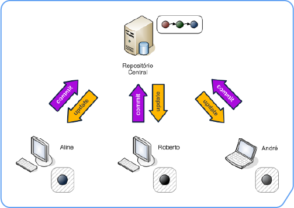Clique ou toque para ampliar.
Figura 2 – Sistema centralizado
Fonte: Dias (2016)
A figura demonstra o controle de versão por meio de um sistema centralizado, no qual todas as requisições e alterações dependem da passagem por um repositório central. Apresenta três computadores, os quais pertencem, respectivamente, aos usuários Aline, Roberto e André. Esses usuários comunicam-se com o repositório central por meio de operações de commit e update.
Para conseguir realizar acesso ao repositório e outras operações pertinentes, os usuários precisam obrigatoriamente estar conectados. Cada desenvolvedor terá uma cópia em sua máquina para realizar as edições, mantendo as versões-base no servidor. Nessa estrutura, o desenvolvedor adicionará os arquivos inteiros e enviará para alterações direto no servidor. Esse tipo de sistema de controle de versão é mais indicado para equipes menores e que trabalham em uma rede local.
Já no sistema distribuído, os diretórios presentes nas máquinas de cada desenvolvedor trabalham de forma individual (como se cada um tivesse o próprio servidor). Cada usuário que for desenvolver código terá uma cópia completa do repositório central diretamente em seu ambiente local. Nesse sistema, os desktops podem fazer a comunicação entre si, apesar de, na maior parte das vezes, utilizarem um servidor central de envios para controle de fluxo. Esse servidor, muitas vezes, é oferecido diretamente pela ferramenta como um servidor remoto de hospedagem dos arquivos do sistema.
Embora seja necessária a conexão com a rede para realizar o envio das alterações e das adições para atualizar o projeto e compartilhar com outros desenvolvedores, os comandos de gerenciamento da cópia local já podem ser aplicados. Em outras palavras, cada desktop terá um repositório, e as operações como commit e update ocorrem de forma local. É possível também haver comunicação com outros desktops, para atualizações nos arquivos locais e também envio de alterações para um destino, por meio dos comandos pull e push (detalhados no decorrer deste conteúdo).
A figura a seguir mostra um exemplo de sistema distribuído em que a comunicação ocorre entre os diferentes desktops individualmente e também com um servidor de controle de fluxo central.
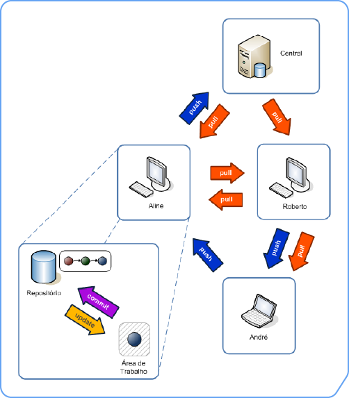Clique ou toque para ampliar.
Figura 3 – Sistema distribuído
Fonte: Dias (2016)
A figura mostra um exemplo de sistema distribuído em que a comunicação ocorre entre os diferentes desktops individualmente e também com um servidor de controle de fluxo central. Apresenta, mais uma vez, os usuários Aline, Roberto e André. Dessa vez, os desktops desses usuários conseguem comunicar-se individualmente. A imagem apresenta setas demonstrando os comandos push e pull, bem como os comandos commit e update aplicados pela máquina de Aline diretamente no repositório.
Esse tipo de sistema é mais indicado para equipes com uma quantidade maior de desenvolvedores ou que não trabalhem em uma rede local.
Aqui você verá, de maneira prática, como ocorrem e quais são as etapas para o desenvolvimento de um projeto com controle de versões.
Como já citado anteriormente, o Git é a ferramenta de controle de versão mais utilizada e difundida mundialmente, porém é preciso mencionar que existem outras ferramentas, como CVS (Concurrent Version System), Subversion, entre outras, que apresentam proposta semelhante ao Git.
Aqui serão abordados recursos de versionamento de códigos, presentes nos comandos do Git, porém as funcionalidades desses recursos são comuns à maior parte das ferramentas de controle de versão.
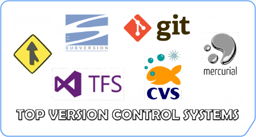Clique ou toque para ampliar.
Figura 4 – Ferramentas de versionamento de software
Fonte: Cortuk (2019)
A imagem apresenta os logos de diversas ferramentas de versionamento de software, sendo elas: Subversion, Git, CVS, Mercurial, TFS.
Lançado em 2005, o Git é um sistema gratuito e open source de controle de versão distribuído. Dotado de uma vasta comunidade, o Git atualmente é a mais difundida ferramenta de controle de versão disponível.
Essa ferramenta tem algumas peculiaridades. As principais são: necessidade de instalação para o funcionamento local; e não ter interface gráfica de forma nativa, assim a aplicação de seus recursos deve ser feita por meio do terminal do sistema operacional ou pelo recurso disponibilizado pelo IDE utilizado pelo programador.
Ao longo de sua carreira como programador, você poderá deparar-se com os termos Git e GitHub. Assim sendo, é interessante dissertar brevemente sobre a diferença entre eles.
É possível entender o Git como um software de controle de versão. Já o GitHub é visto como uma plataforma de versionamento, com alguns aspectos de redes sociais, em que os programadores podem criar perfis e publicar seus projetos, sejam eles de forma pública, sejam eles de forma privativa. Vale ressaltar a interação entre o Git e o GitHub, que ocorre quando as versões dos arquivos locais controladas pelo Git são enviadas para o repositório remoto associado do GitHub.
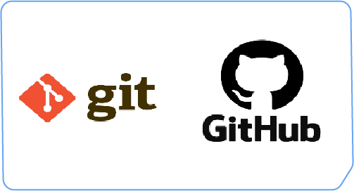Clique ou toque para ampliar.
Figura 5 – Logos do Git e do GitHub
Fonte: GitHub (c2023)
A figura apresenta os logotipos do Git e do GitHub.
O CVS é uma plataforma de controle de versão consolidada no mercado há anos. É considerado um sistema de qualidade de produção, fazendo uso de uma arquitetura cliente-servidor, em que os desenvolvedores têm acesso a cópias controladas dos arquivos do projeto nos quais estão trabalhando. Um destaque do CVS é a sua simplicidade, facilitando o aprendizado por parte da equipe.
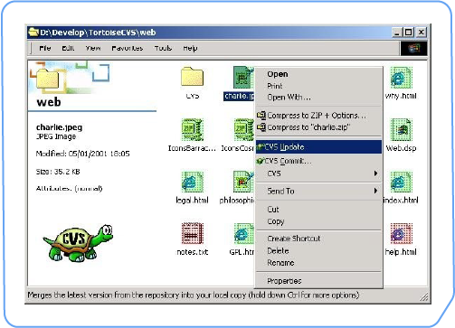Clique ou toque para ampliar.
Figura 6 – Interface de opções integradas do CVS
Fonte: TortoiseCVS ([s. d.])
A figura apresenta e demonstra a seleção de arquivos para aplicação de comandos como Updade e Commit do CVS. Exibe um menu de opções quando o usuário clica com o botão direito sobre o arquivo. Dentre essas opções, estão: CVS Update, CVS Commit, CVS mais opções.
O Subversion é uma ferramenta bastante utilizada no meio corporativo, principalmente por sua confiabilidade e sua segurança. Englobando a maior parte dos recursos do CVS, o Subversion é muito utilizado em projetos corporativos de grande porte. A figura a seguir demonstra o funcionamento da ferramenta Subversion, apresentando um processo simples de interação dos desenvolvedores com o repositório central (sistema centralizado), por meio de commits e updates.
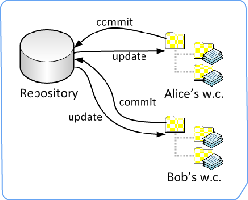Clique ou toque para ampliar.
Figura 7 – Funcionamento básico do Subversion
Fonte: WKU Physics ([s. d.])
A figura demonstra o funcionamento da ferramenta Subversion, apresentando um processo simples de interação dos desenvolvedores com o repositório por meio de commits e updates. Apresenta a imagem de um repositório central comunicando-se com as estações de trabalho de dois usuários (Alice e Bob) por meio de comandos commit e update.
Embora o Subversion não seja um dos lançamentos mais recentes, ainda se mantém no mercado entre os mais utilizados.
O Mercurial merece destaque nesta lista por ser uma ferramenta de controle de versão utilizada por grandes empresas do setor de tecnologia, como Facebook e Google. A agilidade de uso e a facilidade em trabalhar com grandes equipes tornam a abordagem distribuída do Mercurial um grande destaque para essa ferramenta.
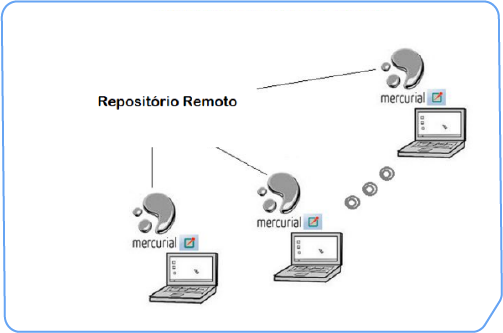Clique ou toque para ampliar.
Figura 8 – Sistema distribuído do Mercurial
Fonte: adaptado de LabTel (c2023)
A figura demonstra a funcionalidade do Mercurial apresentando a abordagem do sistema de controle de versão distribuído. Apresenta três notebooks utilizando o sistema Mercurial para comunicarem-se entre si e também com o repositório remoto.
Em comparação ao Git, há uma pequena diferença em performance na qual o Git se destaca, entretanto o Mercurial também apresenta respostas rápidas.
O TFS (Team Foundation Server) era o nome do controle de versão centralizado não gratuito da Microsoft lançado em 2005. No ano de 2018, com diversas atualizações relevantes no sistema, foi renomeado para Azure DevOps Services. Além de realizar o gerenciamento de versões, essa ferramenta também conta com suas próprias ferramentas colaborativas de desenvolvimento e integra-se ao Git.
As funcionalidades das ferramentas de controle de versão de software podem ser explicadas de maneira prática, à medida que se conhecem seus comandos, os quais resumem e tornam possível o processo de versionamento de código.
Aqui, você verá um pouco mais sobre os comandos comentados ao longo deste conteúdo.
Commit
Este comando realizará a adição das alterações mais recentes dos arquivos para o repositório. Tais alterações devem ser revisadas no repositório principal e, posteriormente, confirmadas. Com isso, quando outros desenvolvedores solicitarem esse arquivo ao servidor central, receberão a versão mais atualizada dele.
Os diferentes commits realizados em arquivos de um projeto, dentro do repositório da ferramenta de controle de versão de software, são mantidos de forma constante, proporcionando, assim, o fácil acesso às diferentes versões de um arquivo.
Push
Este comando é responsável por enviar arquivos do repositório local para o repositório remoto. Dessa forma, o comando push envia todos os commits que foram produzidos pelo desenvolvedor para a confirmação no repositório remoto do servidor central. Isso permite que o resto da equipe tenha acesso a esse arquivo atualizado.
Pull
De forma oposta ao comando push, o comando pull é utilizado para trazer os arquivos do repositório remoto para o repositório local, garantindo que o desenvolvedor está trabalhando com a versão mais atualizada desses dados.
A figura a seguir apresenta a interação entre um repositório local com o repositório remoto, por meio dos comandos pull e push, permitindo atualizar e acessar os commits do repositório remoto.
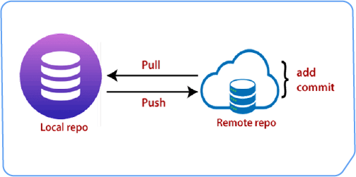Clique ou toque para ampliar.
Figura 9 – Demonstração de comandos e funcionamento
Fonte: Java T Point (c2021)
A figura apresenta a interação entre um repositório local com o repositório remoto, por meio dos comandos pull e push, permitindo atualizar e acessar os commits do repositório remoto. Demonstra a imagem de um repositório local e de um repositório remoto, utilizando os comandos pull e push para a interação.
Neste tópico, você verá como o versionamento de código se aplica dentro da rotina de trabalho de uma equipe. Neste cenário apresentado, você trabalhará com uma equipe de três programadores: Luís, Ana, Camila.
Como primeiro passo, utilizando o Git, os membros da equipe criam um repositório, o qual armazenará os arquivos do projeto que está sendo desenvolvido. Camila realiza um primeiro commit nos arquivos do projeto, denominado “versão inicial”.
A partir desse momento, todos os programadores devem trabalhar de maneira alinhada, sempre utilizando as funcionalidades da ferramenta de controle de versão para manter os arquivos do projeto atualizados, tanto em seu repositório local quanto no repositório remoto, fazendo com que todos os membros da equipe tenham acesso às últimas versões e alterações dos arquivos.
Realizam-se commits que descrevem as alterações realizadas e levam-se essas atualizações ao repositório central (comando push) para que os outros programadores possam também acessar essas modificações e trazê-las para o seu repositório local também (comando pull).
Essas práticas evitam diversas situações de conflito e mantêm a organização do projeto mesmo com os membros da equipe trabalhando de forma simultânea nos mesmos arquivos.
Agora serão simuladas, na prática, ações de membros da equipe de desenvolvimento, demonstrando o desfecho de cada situação, com e sem a aplicação do versionamento de código.
Os programadores Ana e Luís estão trabalhando no mesmo projeto. Em determinado momento, acabam trabalhando no mesmo arquivo de forma simultânea. Nesse caso, Ana realizou um commit no arquivo, porém Luís já havia atualizado esse arquivo anteriormente.
Tendo em vista essa situação, veja os dois cenários possíveis:
1. A equipe não utiliza nenhum tipo de ferramenta para o controle de versão de software
Neste caso, acontecerá uma situação de conflito, visto que Ana está realizando um commit em um arquivo desatualizado, pois não tem a última versão desenvolvida por Luís.
2. A equipe utiliza uma ferramenta de controle de versão de software
Nesta situação, Ana teria sempre os arquivos atualizados em sua máquina. Mesmo que Luís houvesse realizado mais atualizações no arquivo em questão, Ana estaria ciente, e seu commit seria sobre a última versão do arquivo citado. Assim, situações de conflito seriam evitadas.
O versionamento de código permite à equipe decidir a forma como ele será aplicado durante o desenvolvimento de um projeto. Após definida essa etapa, cada versão do projeto que for gerada terá uma hierarquia com base em sua numeração: a numeração principal (primeiro número) muda quando houver alguma alteração completa na aplicação ou questões de incompatibilidade; a numeração secundária identifica novas funcionalidade ou complementos; e, por fim, a terceira numeração demonstra pequenos ajuste ou correção de pequenas falhas.
Clique ou toque para ampliar.
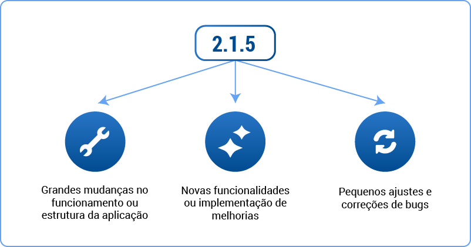
Figura 10 – Entendendo a numeração de uma versão de software
Fonte: Senac EAD (2023)
A figura apresenta o significado de cada número de uma versão de um sistema, partindo da numeração maior para a menor. O numero em questão é 2 ponto 1 ponto 5. Partindo da esquerda para a direita, o primeiro número demonstra pequenos ajustes e correções de bugs. O segundo número demonstra a aplicação de novas funcionalidades ou implementações de melhorias. Por fim, o terceiro número apresenta grandes mudanças no funcionamento ou na estrutura da aplicação.
É preciso perceber que essa numeração aplicada à versão do software deve seguir uma sequência lógica. É essa sequência que permitirá encontrar onde ocorreu determinada falha, evitando, assim, o comprometimento da estrutura do sistema em questão.
Como sugestão, configure a opção de leitura de caracteres e de pontuação de seu leitor de tela para o grau máximo de leitura, a fim de que os códigos disponibilizados neste material sejam lidos corretamente. No caso do NVDA (NonVisual Desktop Access), para localizar a opção Grau de pontuação/símbolos, acesse Preferências – Configurações – Fala. Altere o padrão Pouco para Tudo. Dessa forma, o leitor passará a ler os segmentos de código em sua totalidade.
Neste conteúdo, você conhecerá como funciona o processo de versionamento e entender a importância de cada uma dessas etapas. Para isso, serão digitados vários comandos na interface de linha de comando, para ver, na prática, como se trabalha com a ferramenta Git. Então, para aproveitar melhor este conteúdo, certifique-se de já ter instalado a ferramenta GitBash no seu computador.
Após compreender o ciclo de versionamento, você conhecerá algumas possíveis expansões dos comandos principais que aprenderá. Além disso, também aprenderá como realizar o versionamento de software utilizando ferramentas com interfaces gráficas, neste caso, o GitHub Desktop. Recomenda-se que você já tenha também essa ferramenta instalada.
Você pode consultar o conteúdo Repositórios remotos e sistemas de gerenciamento de configuração para informações sobre instalação e primeiros passos com GitHub Desktop e GitBash.
Para exemplificar o versionamento de um projeto Java, será criado um novo projeto no Apache NetBeans IDE (integrated development environment, em português ambiente de desenvolvimento integrado) e, dentro da pasta do projeto, será iniciado o versionamento. Para exemplo, o projeto será chamado de GitExemplo.
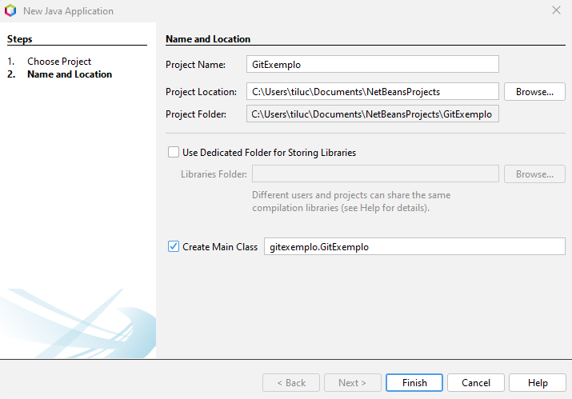Clique ou toque para ampliar.
Figura 1 – Criação do projeto GitExemplo no NetBeans
Fonte: Apache NetBeans IDE (2023)
Tela de criação de projeto do NetBeans com campo Project Name preenchido com valor “GitExemplo”.
Durante a criação do projeto, lembre-se de verificar o local onde o projeto será criado por meio do campo Project Location.
Após criar o projeto, acesse esse diretório e abra o GitBash, clicando com o botão direito do mouse e selecionando a opção GitBash here.
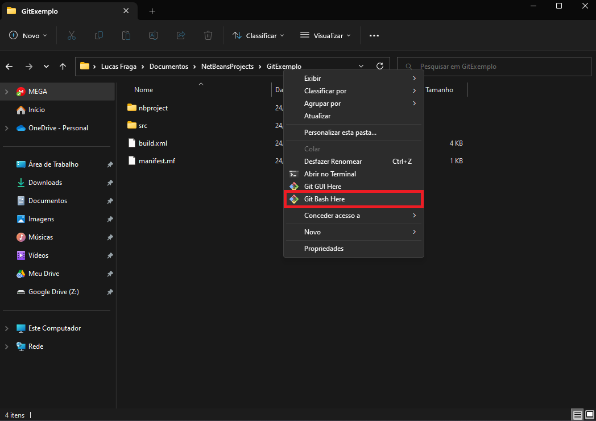Clique ou toque para ampliar.
Figura 2 – Acessando o GitBash no diretório do projeto
Fonte: Senac EAD (2023)
Tela do Windows Explorer evidenciando menu de contexto aberto sobre a pasta destacando a opção Git Bash here.
Um repositório Git rastreia e salva o histórico de todas as alterações feitas nos arquivos em um projeto. Ele salva esses dados em um diretório chamado .git, que é responsável por rastrear e salvar o histórico de todas as alterações feitas nos arquivos do diretório.
Para iniciar o versionamento em um diretório, utiliza-se o seguinte comando:
Clique ou toque para ampliar.
Figura 3 – Terminal do GitBash
Fonte: GitBash (2023)
Tela do GitBash mostrando o comando git init sendo executado na pasta criada anteriormente para o projeto Java.
Após executá-lo, será criada a pasta .git.
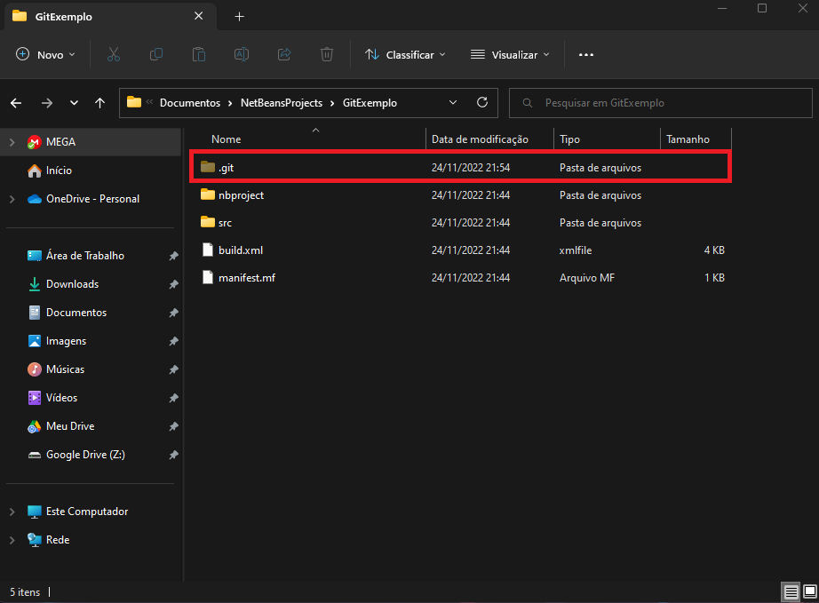Clique ou toque para ampliar.
Figura 4 – Pasta do projeto com a pasta .git
Fonte: Senac EAD (2023)
Tela do Windows Explorer na pasta do projeto evidenciando uma nova pasta .git.
Caso a pasta .git não apareça no seu diretório, isso pode significar que o seu explorador de arquivos está configurado para não exibir itens ocultos. Se deseja habilitar a exibição de itens ocultos, abra o Explorador de Arquivos e selecione Exibir > Mostrar > Itens ocultos.
Vale lembrar que a exibição dos itens ocultos não interferirá no versionamento do projeto. Então, caso não deseje habilitar essa opção, você pode ignorá-la.
Se é a primeira vez que você está utilizando o GitBash no seu computador, então é necessário configurar o nome e o e-mail do seu usuário para que o versionamento reconheça quem é o responsável pelas alterações nos arquivos. Para isso, use dois comandos, um para configurar o nome e outro para configurar o e-mail.
Para adicionar um nome de autor do usuário atual:
git config --global user.name “Nome Sobrenome”
Para adicionar um endereço de e-mail a todos os commits do usuário atual:
Clique ou toque para ampliar.
Figura 5 – Terminal do GitBash
Fonte: GitBash (2023)
Janela do GitBash mostrando a execução dos comandos git config --global user.name “Lucas Fraga” e, em seguida, git config --global user.email “lucas@gmail.com”.
Para verificar o status do versionamento, utiliza-se o comando git status. O comando é relativamente simples e retorna informações muito úteis sobre o que está acontecendo no versionamento dos arquivos e diretórios. Se o comando git status for executado no diretório do projeto, você terá a seguinte saída:
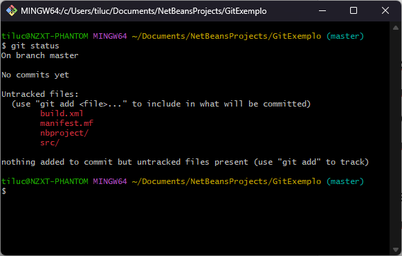Clique ou toque para ampliar.
Figura 6 – Terminal do GitBash
Fonte: GitBash (2023)
Terminal do GitBash mostrando o comando git status executado com a seguinte resposta:
No commits yet
Untracked files:
(use "git add <file>..." to include in what will be committed)
build.xml
manifest.mf
nbproject/
src/
nothing added to commit but untracked files present (use "git add" to track)
Perceba que, atualmente, o versionamento identificou os arquivos build.xml e manifest.mf e os diretórios nbprojecte src com o status untracked, que significa “não rastreado”.
Dentro de um repositório, os seus arquivos e as suas pastas podem ter dois status: untracked (do inglês, “não rastreado”) e tracked (do inglês, “rastreado”).
O status untracked é o estado inicial de todo arquivo adicionado ou editado. Logo, sempre que você iniciar o versionamento em um repositório local, os arquivos serão reconhecidos com o estado de “não rastreado”.
Sabe-se que o Git é uma ferramenta de rastreamento de versão. Essa ferramenta nunca começará a rastrear um arquivo até que você peça especificamente a ela para fazer isso. Se você fizer alguma alteração nos arquivos, o estado deles permanecerá “não rastreado” até usar o comando para rastrear.
O comando git add adiciona arquivos novos ou alterados em seu diretório à área de preparo do Git, marcando-os para inclusão no próximo rastreamento.
Às vezes, esse comando pode passar a impressão de ser uma etapa desnecessária. Afinal, por que é preciso preparar o rastreamento dos arquivos e só depois realizá-lo de fato? Pois bem. O que faz o comando git add tão importante é que, por meio dele, é possível moldar a história sem alterar a forma como se trabalha.
Imagine que, no seu dia a dia como desenvolvedor de software, você precise programar uma determinada funcionalidade para um sistema (a qual será chamada de funcionalidade A). Por ser algo simples, você aproveitou para fazer a implementação de mais um recurso para adiantar o seu trabalho (funcionalidade B).
Após implementar e testar, você deve fazer um relatório de tudo aquilo que você fez. Esse relatório terá todo o registro do que foi feito e desfeito dentro do projeto, incluindo cada linha de código escrita ou modificada. Se algo no sistema projetado der errado, basta seguir o relatório para desfazer tudo que foi feito. Aqui, há as seguintes possibilidades:
Se você optar pela opção 1, caso algo dê errado, você terá perdido um dia inteiro de trabalho, pois terá de desfazer tudo o que foi feito caso o sistema apresente algum problema. Se você optou pelas opções 2 e 3, você poderá corrigir o problema do sistema sem afetar a outra funcionalidade implementada. Então, se o problema parou de funcionar durante a implementação da funcionalidade B, você poderá desfazer tudo relacionado a essa funcionalidade sem afetar o que foi implementado na funcionalidade A.
Esta é exatamente uma das principais vantagens que o versionamento de projetos proporciona: o registro de tudo o que foi feito em um projeto, que pode ser usado para restaurar a versão anterior caso algum problema aconteça. Esse “registro” é chamado, na linguagem técnica, de commit, e o que se faz com o comando git add é dizer quais arquivos serão adicionados ao registro – em outras palavras, quais arquivos serão rastreados (tracked).
Como você está na fase inicial de desenvolvimento do seu projeto (afinal, apenas criou o projeto no Apache NetBeans IDE), é conveniente adicionar todos os arquivos e todas as pastas ao registro do commit. Para isso, é possível informar individualmente todos os arquivos ou usar o caractere ponto-final, que se refere a “tudo que estiver dentro dessa pasta”.
Nesse exemplo, você executará o segundo comando git add . e depois verificará o estado do versionamento com o comando git status.
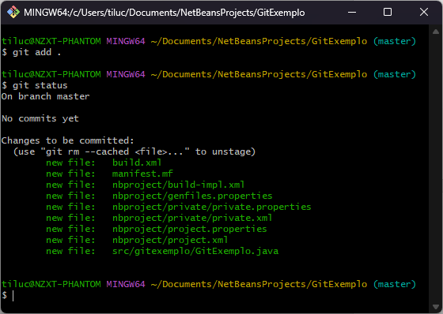Clique ou toque para ampliar.
Figura 7 – Terminal do GitBash
Fonte: GitBash (2023)
terminal do GitBash mostrando a execução do comando git add ., que não apresenta nenhuma resposta, e depois do comando git status, que mostra:
On branch master
No commits yet
Changes to be committed:
(use "git rm --cached
new file: build.xml
new file: manifest.mf
new file: nbproject/build-impl.xml
new file: nbproject/genfiles.properties
new file: nbproject/private/private.properties
new file: nbproject/project.properties
new file: nbproject/project.xml
new file: src/gitexemplo/GitExemplo.java
As últimas oito linhas estão na cor verde.
Perceba que, agora, seus arquivos estão na cor verde, o que significa que eles estão prontos para ser rastreados.
Se você quisesse informar os arquivos e as pastas individualmente, o comando ficaria da seguinte maneira:
Perceba que, no caso das pastas, usa-se o asterisco no final. O motivo disso é simples: na interface de linha de comandos, o asterisco é conhecido como um curinga (também chamado de wildcard, no inglês) para completar o nome de algo. Pensando no seu comando, é preciso informar cada um dos arquivos que você quer, digitando o nome de cada um deles manualmente. Porém, graças ao asterisco, você está dizendo para o comando que usará nome da pasta/qualquer coisa que estiver dentro dela, o que faz economizar bastante tempo ao digitar os comandos.
Se esses conceitos são novos para você, pesquise na internet por “manipulação de arquivos e diretórios em linha de comando”, para conhecer e aprofundar-se mais no uso de interfaces de linha de comando, também conhecido como CLI (Command Line Interface).
No Git, um commit é um snapshot do seu repositório em um ponto específico no tempo, que permite guardar o estado do seu repositório. Dessa forma, ao longo do tempo, haverá uma “linha do tempo” do repositório, na qual estará registrado tudo o que aconteceu para que se chegasse ao resultado final.
Após selecionar quais arquivos irão para o registro de commit, você pode salvar o rastreamento com o comando git commit. Esse comando tem algumas possíveis sintaxes, mas a forma mais utilizada é git commit -m “Uma mensagem aqui...”, na qual se inclui uma breve mensagem para que se saiba a que esse commit se refere (o argumento -m é a sintaxe que diz ao comando que será adicionada uma mensagem). Procure sempre ser breve e claro nessa mensagem, para que você, futuramente, saiba o que foi implementado nessa versão do software. Futuramente, você trabalhará com outros programadores no mesmo projeto, e essa informação será muito importante para que vocês consigam diferenciar uma versão da outra.
Veja algumas dicas para escrever uma boa mensagem nos seus commits.
Como você está realizando o seu primeiro commit, realize-o com a mensagem “Criação do projeto”, pois foi exatamente isso que você fez nesta etapa. Então, o seu comando ficará com a seguinte sintaxe:
Clique ou toque para ampliar.
Figura 8 – Comando git commit no terminal do GitBash
Fonte: GitBash (2023)
Terminal do GitBash mostrando o comando git commit -m “Criação do projeto” sendo executado, mostrando como resposta os nomes dos arquivos do projeto que foram incluídos.
Caso o nome e o e-mail do usuário não tenham sido corretamente configurados, uma mensagem (“Author identity unknown”) aparecerá como resposta ao comando. Basta usar os comandos git config --global user.email e git config --global user.name, explicados anteriormente.
Após isso, conclui-se o rastreamento da versão do projeto. A partir daqui, sempre que você fizer alguma mudança no projeto, pode realizar um novo snapshot dele com os comandos gitadd e gitcommit.
O termo snapshot refere-se a uma captura instantânea de volume ou um retrato fiel de uma situação do ambiente. O termo vem de uma analogia à fotografia, já que é a captura de um estado em um determinado ponto no tempo.
Agora, volte para o seu código do Apache NetBeans IDE. Altere o código do seu arquivo principal e escreva um “Hello World”. Aproveitando, também limpe os comentários gerados na criação do projeto para deixar o seu código mais limpo. O código ficará da seguinte maneira:
package gitexemplo;
public classGitExemplo {
public static void main(String[] args) {
System.out.println("Hello World");
}
}
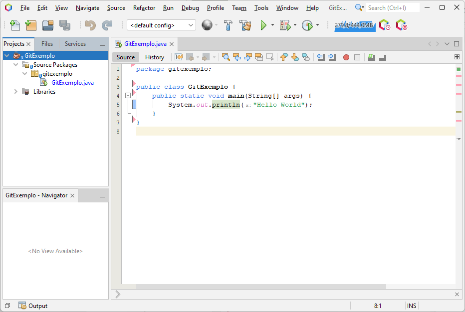
Clique ou toque para ampliar.
Figura 9 – Código-fonte de Hello World em Java
Fonte: Apache NetBeans IDE (2023)
Janela principal do NetBeans com o arquivo GitExemplo aberto, mostrando o código listado anteriormente.
No Apache NetBeans IDE, você pode ter percebido que, ao lado das linhas de código, apareceram algumas setas vermelhas. Se você clicar em alguma delas, verá que o editor de código está apontando quais trechos de código foram removidos em comparação ao último commit realizado. Esse recurso pode ser muito útil caso você precise consultar rapidamente as mudanças feitas no código direto pelo Apache NetBeans IDE.
Voltando ao terminal do GitBash, agora que você já concluiu as alterações do seu projeto, precisa digitar apenas dois comandos:
Pronto! Com isso, você conclui o seu segundo commit. Guarde bem essa informação, pois voltará nesse assunto em breve.
Repositórios remotos são versões do seu projeto que estão hospedadas na Internet ou em outra rede. Você pode ter vários deles e, também, ter várias pessoas trabalhando no mesmo repositório, o que torna possível a colaboração de vários programadores no desenvolvimento de um mesmo projeto de software.
Até aqui, você já criou um repositório local, fez o versionamento do seu projeto e tem todas essas informações guardadas no computador. Agora, você criará um repositório remoto em que guardará todos os registros de versão do projeto, incluindo o código-fonte. Para isso, você utilizará o GitHub, uma plataforma de repositórios remotos e versionamento bastante popular e acessível para todos, já que conta com várias ferramentas para gerenciar o versionamento de projetos de forma gratuita.
Antes de continuar, é importante que você já tenha uma conta criada na plataforma GitHub. Caso ainda não tenha, faça uma pausa na leitura deste conteúdo, crie a sua conta e depois volte para seguir com esta prática.
É bem simples criar uma conta no GitHub. Basta acessar o site oficial e clicar sobre o botão Sign up localizado no canto superior direto da página. Um formulário será aberto para você preencher com seus dados e cadastrar o seu usuário na plataforma.
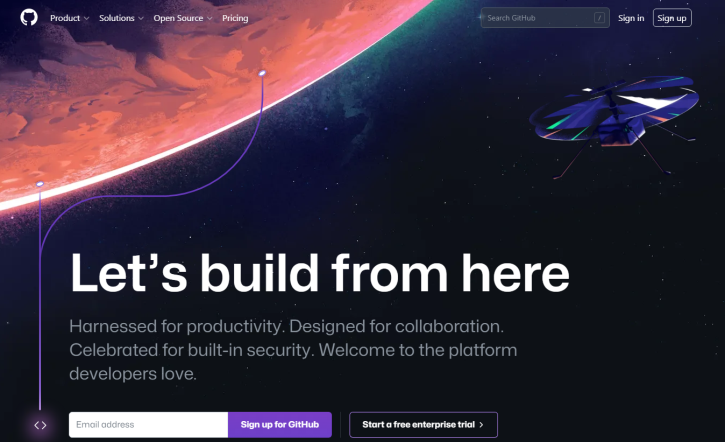Clique ou toque para ampliar.
Figura 10 – Página inicial do site GitHub
Fonte: GitHub (2023)
Página inicial do GitHub. Ao fundo, uma imagem espacial. À frente, um título em letras grandes (“Let’s build from here”) e o texto “Harnesses for productivity. Designed for collaboration. Celebrated for built-in security. Welcome to the plataforma developers love”. No topo à direita, há opções de busca, de Sign in (autenticar-se) e de Sing up (cadastrar-se).
Com seu usuário autenticado na plataforma do GitHub, clique no símbolo de mais (+) localizado na barra superior da página, mais precisamente ao lado direito, e clique na opção New repository para acessar à página de criação de repositórios remotos.
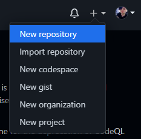Clique ou toque para ampliar.
Figura 11 – Criação de novo repositório no GitHub
Fonte: GitHub (2023)
detalhe da página do GitHub no canto superior direito com menu suspenso revelando a opção New repository, que está selecionada.
Você será direcionado a uma página chamada Create a new repository, na qual terá um breve formulário para preencher com as informações do seu repositório.
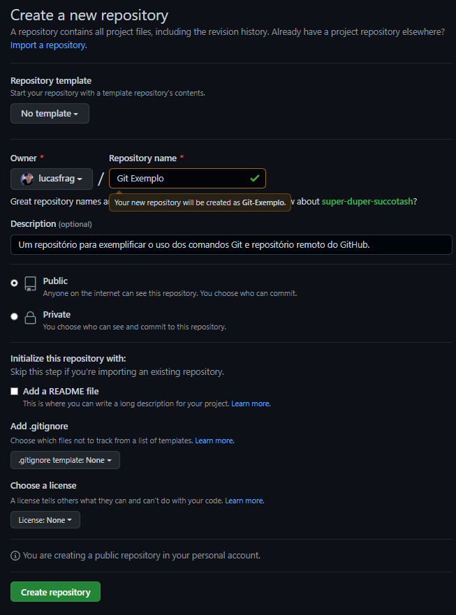Clique ou toque para ampliar.
Figura 12 – Criação de novo repositório no GitHub
Fonte: GitHub (2023)
Página de criação de repositório do GitHub com título Create a new repository e uma série de campos abaixo a serem preenchidos.
A seguir, entenda melhor o que cada uma dessas opções significa.
Repository name
Aqui, você informará o nome do repositório que será criado. É uma boa prática o nome do repositório ter o mesmo nome do projeto, mas isso não é uma regra. As regras que precisam ser lembradas são: o nome do repositório não pode conter espaços ou caracteres especiais (se houver, o GitHub inserirá um hífen no lugar do caractere); e o nome do repositório não pode ser igual ao de outro repositório que você já tenha criado.
Description
Neste campo, você pode trazer uma breve descrição do repositório para que você e outras pessoas saibam do que se trata esse projeto.
Public/Private
Você pode escolher se deseja que o repositório fique visível apenas para você (private) ou para todos que acessarem o seu perfil (public). Outros poderão visualizar e baixar o seu projeto caso a opção public seja selecionada. Para a criação de um portfólio, isso é ótimo! Porém, caso esteja lidando com um projeto mais sensível, a melhor opção é deixa-lo como private.
Initialize this reposity with
Este é um trecho referente à inicialização do repositório remoto. É como se você estivesse criando uma pasta no servidor do GitHub e usando o git init para iniciar o versionamento. Logo, é possível selecionar a inicialização com um arquivo README.md e configurar um arquivo .gitignore (um arquivo de regras que diz ao repositório quais arquivos, pastas ou extensões serão ignorados no versionamento).
Choose a license
Os repositórios públicos no GitHub costumam ser usados para compartilhar software de código aberto. Para que seu repositório seja realmente de código aberto, você precisará licenciá-lo para que outras pessoas tenham liberdade para usar, alterar e distribuir o software. Nessa opção, você seleciona o licenciamento do seu repositório.
Para esse exemplo, o Repository name foi preenchido com o nome do projeto, “Git Exemplo”, e foi usado o espaço para demonstrar a correção que o GitHub faz quando se usa o espaço nesse campo. Em Description, o projeto foi descrito como “Um repositório para exemplificar o uso dos comandos Git e repositório remoto do GitHub”. A última configuração feita foi selecionar Public na visibilidade do repositório. Após isso, deve-se clicar em Create repository para finalizar a criação.
Assim que o repositório for criado, você será redirecionado para uma nova página. Perceba que o endereço dessa página tem a seguinte estrutura:
Esse é o endereço de acesso do seu repositório, onde “nome do usuário” será o nome do usuário que você definiu durante o processo de criação de conta no GitHub e “nome do repositório” será o nome que você definiu durante a criação do repositório remoto. Lembre-se de que, caso tenha usado espaço ou algum caráter especial, o GitHub substituirá esses caracteres por um hífen, já que estes não são permitidos na codificação de endereços eletrônicos.
Para ter mais informações sobre como funcionam as regras de codificação de endereços eletrônicos na web, pesquise por “Codificação de URL” ou “Codificação por cento”.
Nessa nova página, a plataforma do GitHub trará algumas sugestões de comandos para executar caso o seu repositório local ainda não exista ou caso ele já exista. Dentre as opções, siga a segunda abordagem ...or push an existing repository from the command line, que se refere ao envio de um projeto já versionado para o repositório remoto.
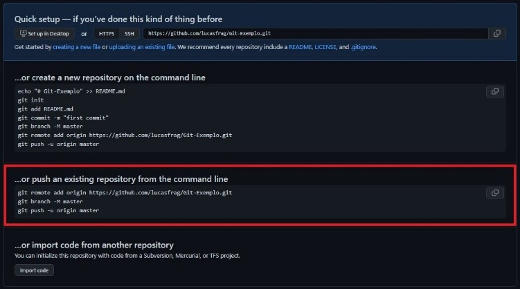Clique ou toque para ampliar.
Figura 13 – Repositório remoto no GitHub
Fonte: GitHub (2023)
Página de configuração do repositório no GitHub, trazendo Quick setup – if you’ve none this kind of thing before acima; no meio, uma seção com título …or create a new repositor on the command line, seguido de alguns comandos git. Abaixo, outra seção, com título …or push an existing repositor from the command line, seguido de comandos git e, mais abaixo, outra seção com título …or import code from another repository, seguido de comandos git.
É possível copiar os comandos sugeridos pelo GitHub ou digitá-los manualmente. Por questões didáticas, a recomendação é que você digite cada comando para entender melhor cada etapa do processo. Futuramente, você pode aproveitar esse recurso para agilizar o processo no seu dia a dia como desenvolvedor. O primeiro comando que você usará será o git remote.
O comando git remote permite criar, visualizar e excluir conexões com outros repositórios. As conexões remotas são mais como favoritos do que links diretos para outros repositórios. Em vez de fornecer acesso em tempo real a outro repositório, eles servem de nomes convenientes que podem ser usados para referenciar uma URL (uniform resource locator) não tão conveniente.
Na prática, é preciso dizer “para onde” serão enviados os arquivos do seu repositório. Então, seguindo o exemplo, seria necessário enviar para o endereço:
Porém, digitar esse endereço manualmente na linha de comando seria algo muito trabalhoso e tornaria a operação de envio para o repositório remoto mais complexa e cansativa. Portanto, com o comando git remote add <nome> <endereço do repositório remoto>, você vinculará um nome simples que servirá de “nome alternativo” para esse endereço.
Seguindo o exemplo, o comando ficará:
Clique ou toque para ampliar.
Figura 14 – Terminal do GitBash
Fonte: GitHub (2023)
Terminal do GitBash mostrando a execução do comando git remote add origin https://github.com/lucasfrag/Git-Exemplo.git, sem resposta.
O comando que você deve executar no seu computador deve conter o nome do seu usuário do GitHub e o nome do seu repositório remoto.
Nesse comando, “origin” é o nome alternativo definido. Por boas práticas, esse é um nome padrão utilizado para se referir ao repositório remoto principal. Então, sempre que você usar o termo “origin” nos comandos do Git, a ferramenta entenderá que está se referindo a esse endereço eletrônico que foi vinculado.
Uma das funções mais importantes no controle de versões do Git são as ramificações, também conhecidas como branches.
Imagine que você tem um projeto 100% funcional e surge a necessidade de modificar uma das funcionalidades desse projeto. Se fizer essa mudança diretamente, corre o risco de quebrar o que já está funcionando e causar outros problemas posteriores que podem comprometer todo o software. Porém, quando se cria uma ramificação do código principal, é possível fazer alterações sem modificar o que está funcionando. Então, pode-se pensar nas ramificações como áreas isoladas onde o código é duplicado e é possível modificar e testar o projeto sem afetar outras versões já funcionais.
Futuramente, os conceitos e as práticas de ramificações serão mais aprofundados. Por ora, tudo o que você precisa é definir a ramificação principal com o comando git branch (para fazer essa definição, use o argumento -m). Então, execute o seguinte comando:
Clique ou toque para ampliar.
Figura 15 – Terminal do GitBash
Fonte: GitBash (2023)
Terminal do GitBash mostrando o comando git branch -m master sem resposta.
Dependendo da data de criação da sua conta no GitHub, é possível que o seu usuário esteja configurado para usar a ramificação main como branch principal.
Para confirmar essa informação, você pode acessar, no site do GitHub, a opção Settings > Repositores e verificar o nome definido em Repository default branch.
Clique ou toque para ampliar.
Figura 16 – Configurações de usuário no GitHub
Fonte: GitHub (2023)
Página de configurações do perfil no GitHub com a opção Repositories no menu lateral, selecionada. No corpo da página, título “Repository default Branch” e destaque para o campo onde está escrito “master”.
Se este for o caso, você pode executar o comando anteriormente apontado para essa ramificação. Ele ficará: git branch -m main.
Agora, você tem tudo pronto para, de fato, enviar tudo que está no repositório local para o repositório remoto. Para isso, use o comando git push. O termo push vem do inglês e significa “empurrar”. Essa é uma analogia para o ato de mover algo de um local para outro, sendo, então, os arquivos do repositório local para o repositório remoto.
O processo de pushing fará o upload não apenas dos seus arquivos e pastas, mas também de todo o histórico de versionamento (no caso, os registros de commit). Para executar esse comando, é preciso dizer para qual local e branch “empurrará” os dados. Como você já executou os comandos git remote e git branch para definir o repositório remoto e a ramificação principal, basta apontar para esses locais respectivamente (para essa definição, usa-se o argumento -u). Logo, o comando terá a seguinte sintaxe:
Clique ou toque para ampliar.
Figura 17 – Terminal do GitBash
Fonte: GitBash (2023)
Terminal do GitBash executando o comando git push -u origin master e retornando textos informando contagem de itens atualizados, compressão e progresso da operação.
Assim que o comando for processado, você pode voltar à página do repositório lá no GitHub e atualizá-la. Você verá que agora todos os arquivos do projeto estarão lá, incluindo os registros de commit (para acessá-los, basta clicar no link de contagem dos commits abaixo do botão verde Code).
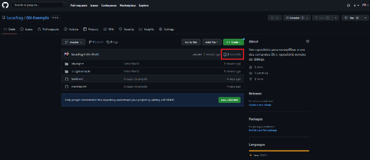Clique ou toque para ampliar.
Figura 18 – Página do repositório remoto no GitHub
Fonte: GitHub (2023)
Página do repositório no GitHub mostrando o item commits acima da listagem dos arquivos do projeto.
Você recorda que já foi comentado para não se esquecer do segundo commit? Se você acessar os registros de commits e selecionar o segundo, encontrará o histórico de absolutamente tudo que foi alterado no projeto desde o primeiro commit.
A seguir, em destaque vermelho, veja o que foi removido e, em destaque verde, o que foi alterado.
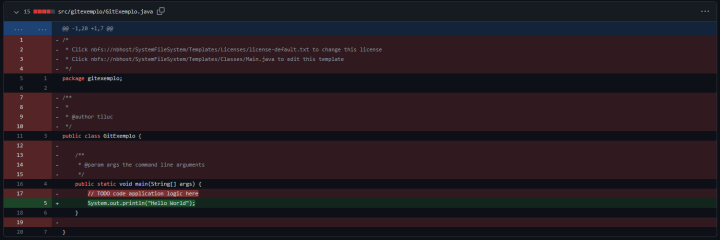Clique ou toque para ampliar.
Figura 19 – Detalhes sobre o commit no GitHub
Fonte: GitHub (2023)
Página de commit do arquivo GitExemplo.Java mostrando trechos do código com fundo em vermelho e outros em verde.
E é por meio desse histórico sobre o que foi alterado em cada arquivo que o Git permite desfazer alguma mudança que tenha comprometido o funcionamento do software. Além disso, vale destacar que o GitHub não informa o horário em que os commits chegaram no repositório remoto, mas, sim, o horário em que eles foram feitos localmente. Portanto, caso você fique sem conexão com a Internet, pode realizar os commits no seu computador e enviar para o GitHub mais tarde sem medo de causar a impressão que você fez as coisas de última hora.
Quando se trabalha com o versionamento de projetos em equipes, é comum que o repositório remoto tenha informações que não estão sincronizadas com o repositório local. Isso pode ocorrer por causa de um git push realizado por outro programador que realizou alguma mudança no código-fonte. Nesses casos, é preciso trazer essas mudanças do repositório remoto para o repositório local.
Seguindo a analogia de “empurrar” os dados, quando se quer trazer dados remotos para o ambiente local, você está “puxando” essas informações. Daí o termo pull (em português, “puxar”) no comando git pull, que se refere ao processo de baixar o registro de versionamento ausente no repositório local.
Para ver, na prática, como esse comando funciona, crie um arquivo diretamente no repositório remoto por meio da página do GitHub. O processo aqui será bem simples: na página do repositório, clique no botão Add a readme para adicionar um arquivo README.md.
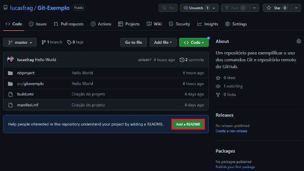Clique ou toque para ampliar.
Figura 20 – Página do repositório remoto no GitHub
Fonte: GitHub (2023)
Página do projeto no GitHub destacando um botão no corpo da página abaixo da listagem de arquivos do projeto com a frase “Add a README”.
Arquivos README.md são a apresentação do repositório no GitHub. Ele é escrito em Markdown, uma linguagem de marcação utilizada para converter o texto em um HTML (sigla para hypertext markup language, que significa linguagem de marcação de hipertexto) válido. Você pode usar a linguagem de Markdown ou o próprio HTML para escrever esses arquivos. Como estes funcionam como uma “carta de apresentação” sobre o projeto, é importante que esses arquivos contenham informações como:
Ao clicar no botão, você será redirecionado a uma página com um modelo de README.md pré-construído baseado no nome e na descrição do repositório. Por enquanto, aproveite a estrutura montada e crie o arquivo do jeito que está para não perder o foco dessa prática. Para concluir a criação, desça a página e clique no botão Commit new file. Você perceberá que o próprio GitHub já preenche automaticamente a mensagem do novo commit como “Create README.md”. Caso você queira, você pode alterá-la.
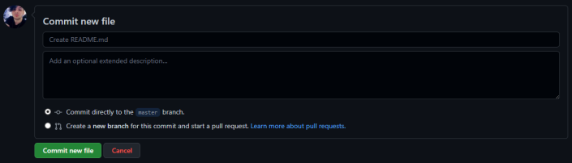Clique ou toque para ampliar.
Figura 21 – Commit de novo arquivo no GitHub
Fonte: GitHub (2023)
Seção de commit do Github, mostrando o título “Commit new file”, um campo com o texto “Create README.md”, outro abaixo com o texto “Add na optional extended desciption” e a opção “Commit directly to the master branch” marcada. Abaixo, botões Commit new file” e Cancel.
Agora o repositório remoto tem um commit a mais em relação ao repositório remoto. Enquanto essas informações não forem sincronizadas, você não será capaz de fazer envios do repositório local para o repositório remoto. Então, é uma boa prática sempre começar rodando o comando git pull antes de fazer qualquer alteração no projeto, quando estiver trabalhando em equipe, para receber todas as atualizações.
Agora, volte ao terminal do GitBash e execute o seguinte comando:
Perceba que, assim como no comando git push, é preciso informar de qual repositório e ramificação você baixará as mudanças.
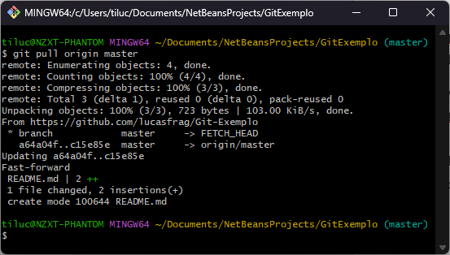Clique ou toque para ampliar.
Figura 22 – Terminal do GitBash
Fonte: GitBash (2023)
Terminal do GitBash mostrando o comando git pull origin master executado. Na resposta, várias indicações de status informando o andamento da operação e o download do arquivo readme.md.
Após isso, o arquivo README.md que você acabou de criar aparecerá no diretório de arquivos do projeto.
Existem várias formas diferentes para desfazer as alterações no projeto com o versionamento. Por questões didáticas, aborde a estratégia mais simples, que é reverter um commit anterior.
Para isso, tudo o que você precisa fazer é digitar o seguinte comando:
O HEAD é um ponteiro na sua ramificação. Por padrão, ele sempre apontará para o último commit. Nesse caso, commit Create README.md está sendo revertido.
Quando você executa o comando, será aberto um arquivo no editor de texto que você selecionou como padrão durante o processo de instalação do GitBash. Você não precisa fazer nenhuma mudança aqui. Apenas feche o arquivo, assim o terminal do GitBash retornará a seguinte mensagem:
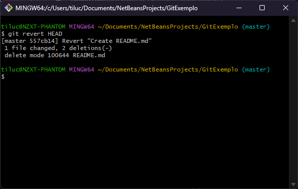Clique ou toque para ampliar.
Figura 23 – Terminal do GitBash
Fonte: GitBash (2023)
Terminal do GitBash executando o comando git revert HEAD e mostrando, como resposta, dados de status, informando uma alteração e duas exclusões de arquivo.
Agora que tudo o que foi feito no repositório local foi revertido, é preciso sincronizar essas informações com o repositório remoto. Digite o comando gitpush -u origin master e você verá no histórico de commits do repositório remoto um novo commit referente à “reversão” que acabou de fazer.
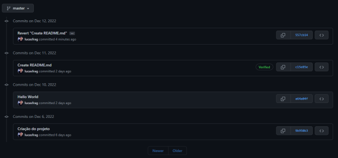Clique ou toque para ampliar.
Figura 24 – Histórico de commits no GitHub
Fonte: GitHub (2023)
Página do GitHub mostrando uma lista dos commits realizados no projeto, um abaixo do outro, mostrando a data e a descrição informada para cada commit.
Caso você quisesse reverter um commit mais antigo, por exemplo, o penúltimo, usaria o comando:
git revert HEAD~1
Se você quisesse o antepenúltimo commit, o comando ficaria:
git revert HEAD~2
Perceba que aqui há um cálculo sendo feito, em que o HEAD representa o último commit feito, o caractere ~ representa uma subtração e os números 1 e 2 apontam a contagem de commits que se quer voltar em relação ao último commit feito. Por isso essa visualização do histórico de commits no GitHub é tão importante, pois, por meio dela, é possível identificar facilmente qual registro de commit você deseja reverter.
Imagine que você tenha feito todo o processo de versionamento no seu computador e agora precisar dar continuidade ao seu trabalho em outro computador. Se você sincronizou o seu repositório local com o repositório remoto, então tudo o que você precisa é dar continuidade ao seu trabalho que está lá no GitHub. Para isso, o primeiro passo é baixar o repositório remoto no outro computador. Para fazer isso, você pode usar a seguinte sequência de passos:
Entretanto, nem sempre você desejará baixar o seu projeto para dar sequência à programação de um projeto. Às vezes, você pode querer apenas baixar o seu projeto em outro computador ou baixar o projeto de outro desenvolvedor disponível para uso livre do GitHub. Nesses casos, é possível fazer o download diretamente da página oficial do repositório remoto ou utilizar o comando git clone, que, literalmente, clonará o repositório.
O GitHub Desktop é um aplicativo de código aberto que tem uma interface visual criada para simplificar e tornar o processo de versionamento mais produtivo. Apesar de a ferramenta tornar você independente da interface de linha de comando, pois não precisa mais digitar comandos para realizar o versionamento, ainda é necessário ter conhecimento sobre cada passo no ciclo de versionamento.
O GitHub Desktop, como o próprio nome sugere, só permite interagir com repositórios remotos do GitHub. Sendo assim, caso você se encontre trabalhando com um repositório remoto de outro local (como GitLab, Bitbucket etc.), a ferramenta não conseguirá realizar as tarefas de versionamento. Como alternativa, você pode utilizar a própria interface de linha de comando ou buscar um software que tenha compatibilidade com o repositório remoto em questão.
Na primeira vez que você abre o GitHub Desktop, é recebido com uma tela de boas-vindas e algumas opções para continuar. Para seguir, é recomendado já vincular a sua conta do GitHub ao aplicativo. Portanto, nessa primeira tela, selecione a opção Sign in to GitHub.com e conclua o processo de autenticação na janela que será aberta no seu navegador de Internet.
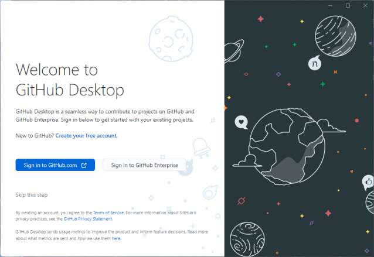Clique ou toque para ampliar.
Figura 25 – Tela inicial do GitHub Desktop
Fonte: GitHub Desktop (2023)
Tela inicial do GitHub Desktop com título “Welcome to GitHub Desktop” e botões Sign in to GitHub.com (azul) e Sign in yo GitHub Enterprise (cinza).
Após isso, abrirá a tela de configuração do Git. Você se lembra quando configurou o nome e o e-mail do usuário autenticado no GitBash? Para isso, você utilizou o comando git config. Aqui, será o mesmo processo. Porém, por meio dos dados do GitHub, o aplicativo do GitHub Desktop já preencherá automaticamente o nome e o e-mail com base nos dados que você informou ao criar a sua conta na plataforma. Caso deseje alterar alguma informação, você pode selecionar a opção Configure manually. Caso esteja tudo certo, mantenha a opção Use my GitHub account name and e-mail address selecionada e clique no botão Finish.
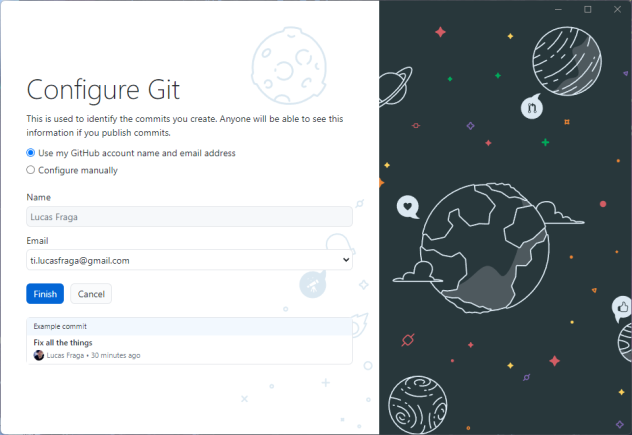Clique ou toque para ampliar.
Figura 26 – Tela de configuração do GitHub Desktop
Fonte: GitHub Desktop (2023)
Tela de configuração do GitHub Desktop mostrando campos preenchidos.
Após concluir as configurações, você será levado à tela principal do GitHub Desktop.
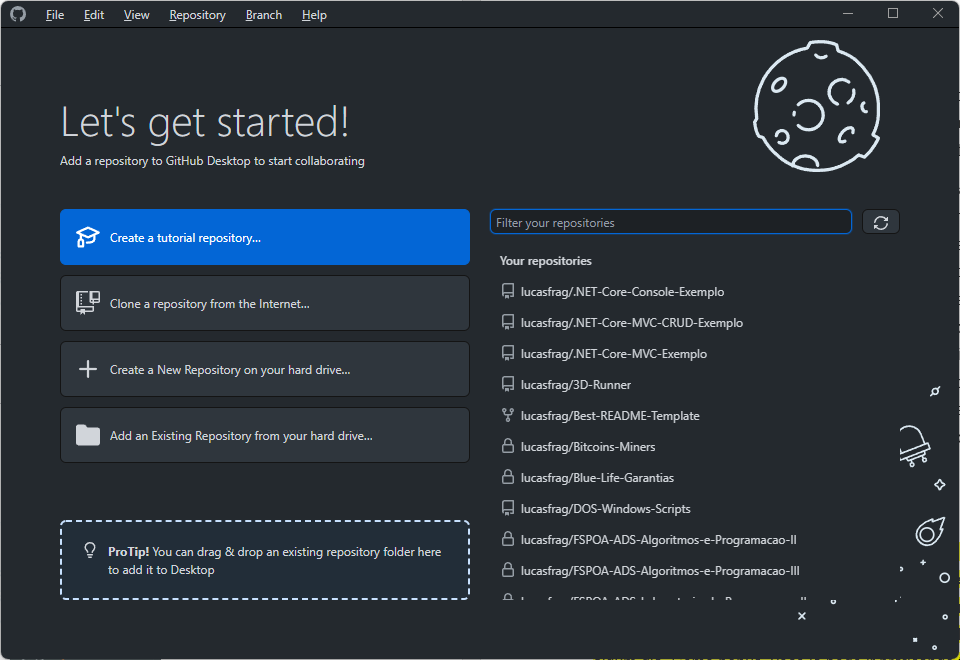Clique ou toque para ampliar.
Figura 27 – Tela principal do GitHub Desktop
Fonte: GitHub Desktop (2023)
Tela com título “Let’s get started” e botões Create a tutorial repositor, Create a repository from the internet, Create a New Repository on your hard drive e Add an existing repository from your hard drive. À direita, há uma lista de repositórios.
Nessa nova tela, haverá uma listagem dos repositórios que existem no GitHub e quatro opções para escolher:
Para realizar uma prática paralela à que você realizou com o GitBash, comece tudo do zero. Então, selecione a opção Create a New Repository on your hard drive.
Na nova janela que será aberta, haverá um formulário similar ao de criação de repositório remoto do GitHub. Aqui, preencha o nome do repositório como “GitHub Desktop Exemplo”, a descrição como “Um repositório para exemplificar o uso do GitHub Desktop”, selecione uma pasta onde fará o versionamento do projeto (para isso, crie uma nova pasta onde você gostaria de realizar essa prática e lembre-se bem dela, pois voltará nesse ponto depois) e deixe desmarcada a opção de iniciar o repositório com um arquivo README.
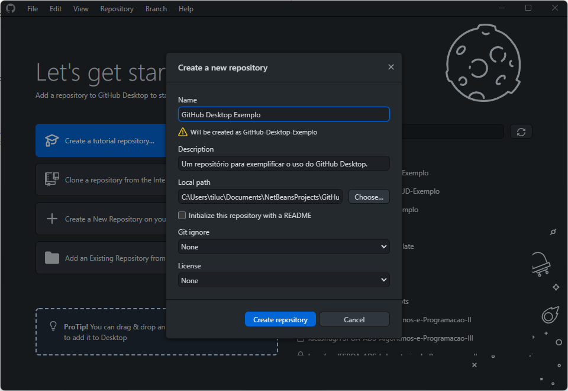Clique ou toque para ampliar.
Figura 28 – Tela de criação de repositório do GitHub Desktop
Fonte: GitHub Desktop (2023)
Janela pop-up “Create a new repository” no GitHub Desktop, com campos Name, Description, Local path, Git ignore e License e botões Create repository e Cancel.
Após preencher tudo, clique no botão Create repository. Agora, você terá uma pasta com o versionamento funcionando (esse passo é equivalente à execução do comando git init). Uma nova tela será apresentada informando que ainda não há nenhuma mudança no repositório local.
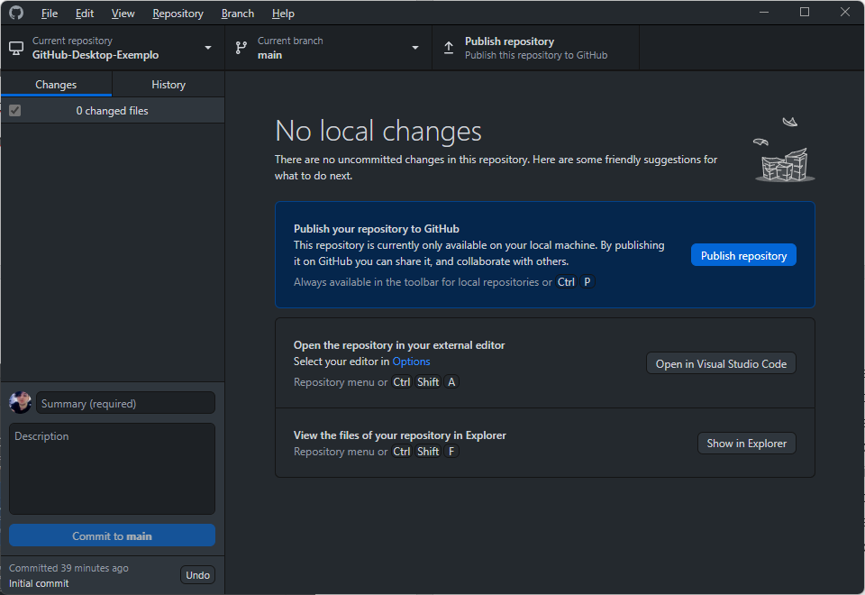Clique ou toque para ampliar.
Figura 29 – Tela do repositório no GitHub Desktop
Fonte: GitHub Desktop (2023)
Tela principal do repositório no GitHub Desktop com título “No local changes” e algumas opções abaixo.
Agora, você criará um novo projeto no Apache NetBeans IDE dentro da pasta que está sendo versionada. Volte ao Apache NetBeans IDE e crie um novo projeto chamado “GitHub Desktop Exemplo” (se desejar, você pode usar outro nome; o importante é ter um novo projeto Java). Antes de concluir a criação do projeto, certifique-se de alterar o local de criação para o diretório que acabou de criar com o GitHub Desktop.
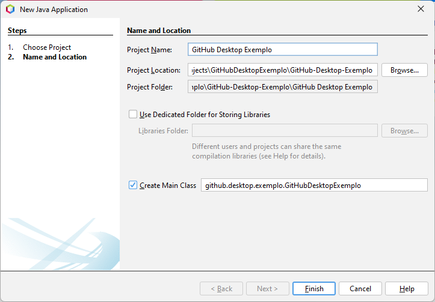Clique ou toque para ampliar.
Figura 30 – Criação do projeto "GitHub Desktop Exemplo" no NetBeans
Fonte: Apache NetBeans IDE (2023)
Tela de criação de projeto Java no NetBeans, com campo Project Name preenchido com “GitHub Desktop Exemplo”.
Após o projeto ser criado com sucesso, volte ao GitHub Desktop e perceba algumas mudanças em relação à tela que você tinha anteriormente. Agora, os arquivos criados dentro da pasta versionada estão sendo listados como arquivos novos (pode-se associar isso ao comando git status).
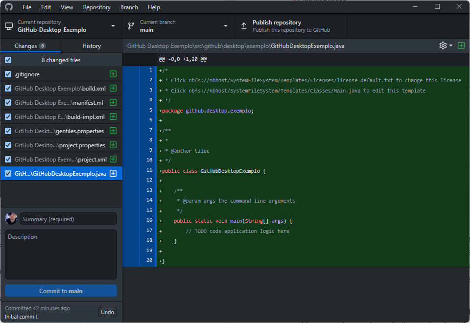Clique ou toque para ampliar.
Figura 31 – Tela de histórico no GitHub Desktop
Fonte: GitHub Desktop (2023)
À esquerda, uma área Changes, na qual estão listados os arquivos do projeto seguidos de sinal de + à direita de cada um. Na área direita da tela, há o conteúdo do arquivo GitHubDesktopExemplo.java, selecionado à esquerda, com fundo verde.
Logo abaixo da listagem dos arquivos, há uma área para preencher os dados de registro do commit. Para este exemplo, o commit será chamado de “Criação do projeto”. Após preencher o campo, clique no botão Commit to main para concluir o commit (essa etapa é equivalente aos comandos git add . e git commit).
Após isso, a tela apresentará a mensagem de “No local changes” mais uma vez.
Como você já tem o projeto versionado localmente, é a hora perfeita para enviar todas as informações para o repositório remoto. Para isso, clique no botão Publish repository.
Clique ou toque para ampliar.
Figura 32 – Tela do repositório no GitHub Desktop
Fonte: GitHub (2023)
Tela principal do repositório no GitHub Desktop com o título “No local changes” e o botão Publish repository destacado abaixo.
Essa ação criará automaticamente um repositório remoto no GitHub, usando todas as informações passadas na criação do repositório local. Porém, antes, há uma tela de confirmação para o GitHub Desktop saber se ele deve usar essas informações ou não. Caso queira alterar alguma informação, você pode fazer isso agora. Antes de continuar, apenas se certifique de que a opção Keep this code private está desmarcada, para criar o repositório remoto com visibilidade pública. Caso deseje mantê-lo privado, você pode deixar a opção marcada.
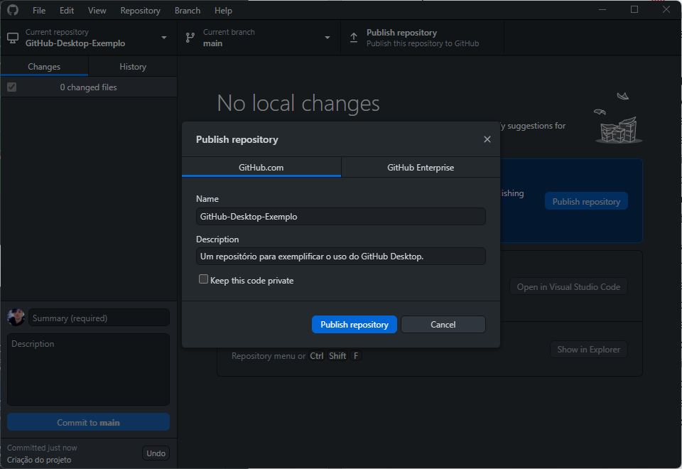Clique ou toque para ampliar.
Figura 33 – Tela de publicação de repositório no GitHub do GitHub Desktop
Fonte: GitHub Desktop (2023)
Janela pop-up com título “Publich repository” e campos Name com valor “GitHub-Desktop-Exemplo” e Description com valor “Um repositório para exemplificar o uso de GitHub Desktop”, opção Keep this code private desmarcada e botões Publish repository e Cancel.
Quando concluir o envio, o botão antes conhecido como Publish repository passará a se chamar Fetch origin e terá a data e a hora da última vez que houve alguma interação com o repositório remoto. E se você acessar a aba History, terá o histórico completo de cada commit realizado nesse projeto em uma interface parecida com a do site do GitHub. Se você acessar a página do seu novo repositório, perceberá que as informações estão exatamente iguais.
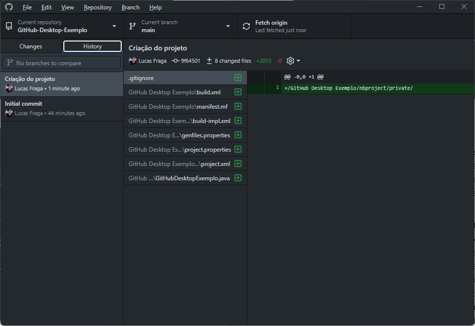Clique ou toque para ampliar.
Figura 34 – Tela de histórico no GitHub Desktop
Fonte: GitHub Desktop (2023)
À direita, a aba History está acionada, mostrando Criação do projeto e Initial commit. À direita, mostra-se a lista de arquivos e detalhes do arquivo selecionado.
Agora, volte ao Apache NetBeans IDE e, mais uma vez, altere a sua classe principal, limpe os comentários e escreva um “Hello World”. O código será o mesmo utilizado no projeto anterior. Após essas mudanças, na aba Changes, você verá um contador 1 sinalizando que um arquivo sofreu alteração desde o último commit. Se você clicar no arquivo na listagem, conseguirá visualizar todas as mudanças que ocorreram nesse arquivo.
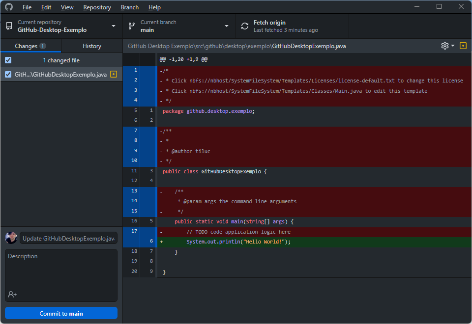Clique ou toque para ampliar.
Figura 35 – Tela de histórico no GitHub Desktop
Fonte: GitHub Desktop (2023)
Na tela, à esquerda, a aba Changes(1) está ativa, mostrando na listagem o nome do arquivo GitHubDesktopExemplo.java e um ponto laranja à direita do nome.
O processo de commit será repetido e chamado de “Hello World”.
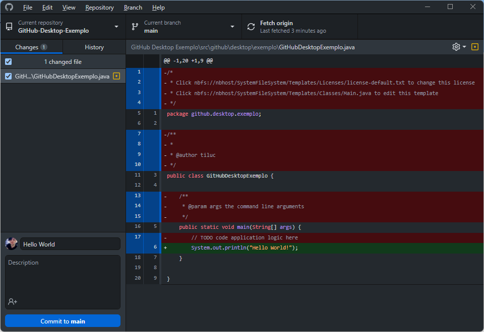Clique ou toque para ampliar.
Figura 36 – Tela de histórico no GitHub Desktop
Fonte: GitHub Desktop (2023)
Tela da figura anterior, mas com o campo na parte inferior da aba Changes preenchido com valor “Hello World”; abaixo disso, botão Commit to main ativado.
Após concluir o registro de commit, acessando a aba de History, você verá que, além de o novo commit já estar sendo listado, há um ícone de uma seta apontando para cima. Isso significa que há registros no repositório local que ainda não foram sincronizados com o repositório remoto (o mesmo contador aparecerá no botão Push origin). Pressione esse botão e, mais uma vez, terá o processo de git push acontecendo e enviando as informações para o repositório remoto.
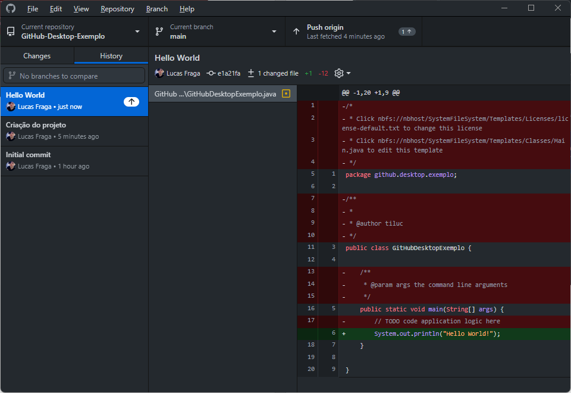Clique ou toque para ampliar.
Figura 37 – Tela de histórico no GitHub Desktop
Fonte: GitHub Desktop (2023)
Aba History ativada destacando o commit “Hello World” com uma seta para cima. À direita, a listagem de arquivos presentes no commit.
Agora, você fará o processo inverso. Em vez de fazer uma mudança no repositório local, você fará no repositório remoto e depois sincronizará ambos. Para isso, é possível repetir o mesmo procedimento de criação do arquivo README.md que você fez na prática com o GitBash.
Depois, retorne ao GitHub Desktop e clique no botão Fetch origin para revelar uma nova ação. Como agora há mudanças no repositório remoto em comparação ao repositório local, é preciso “puxar” essas informações. Você verá que a opção Pull origin e um contador de commits aparecerão no topo da tela.
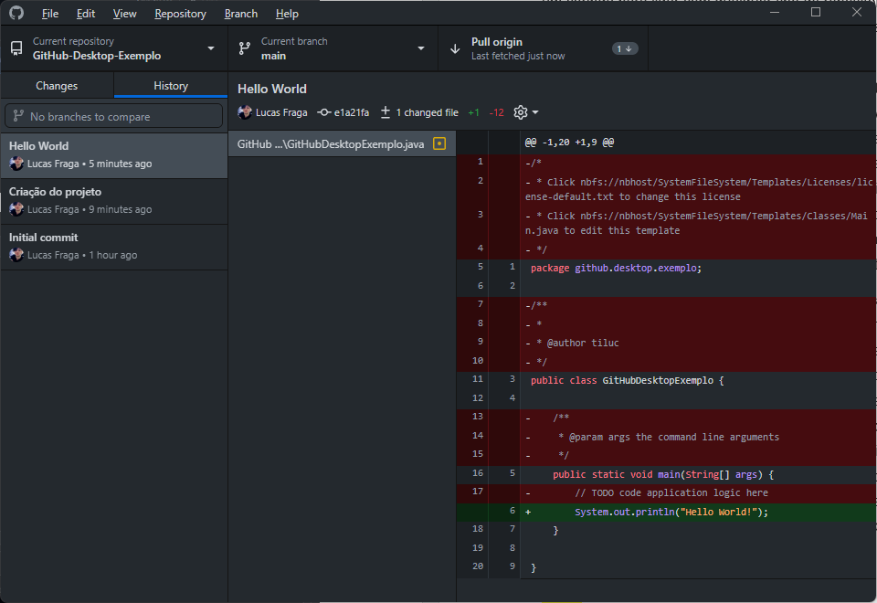Clique ou toque para ampliar.
Figura 38 – Tela de histórico no GitHub Desktop
Fonte: GitHub Desktop (2023)
Aba History ativada destacando no topo o botão Pull origin seguido do número 1.
O GitHub Desktop iniciará o processo de git pull assim que você clicar nessa ação. Após concluí-lo, você poderá conferir na tela de History o novo commit adicionado e o arquivo README.md na pasta do diretório.
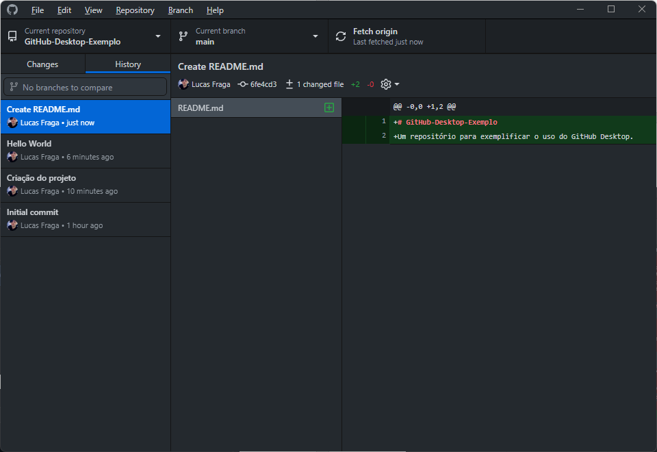Clique ou toque para ampliar.
Figura 39 – Tela de histórico no GitHub Desktop
Fonte: GitHub Desktop (2023)
Tela mostrando a aba History ativada e um novo commit Create README.md na lista.
Você deve se lembrar que, para reverter o último commit no GitBash, utilizou o comando git revert HEAD. Se quisesse reverter um commit mais antigo, precisaria fazer uma contagem do commit em questão em relação ao último. Bom, aqui no GitHub Desktop, o processo ficou muito mais fácil graças à interface visual do aplicativo. Em History, basta você pressionar o botão direito do mouse sobre o commit que deseja reverter para revelar um menu de opções. Nele, a primeira opção será Revert changes in commit. Nesse exemplo, selecione o commit “Hello World” para reverter.
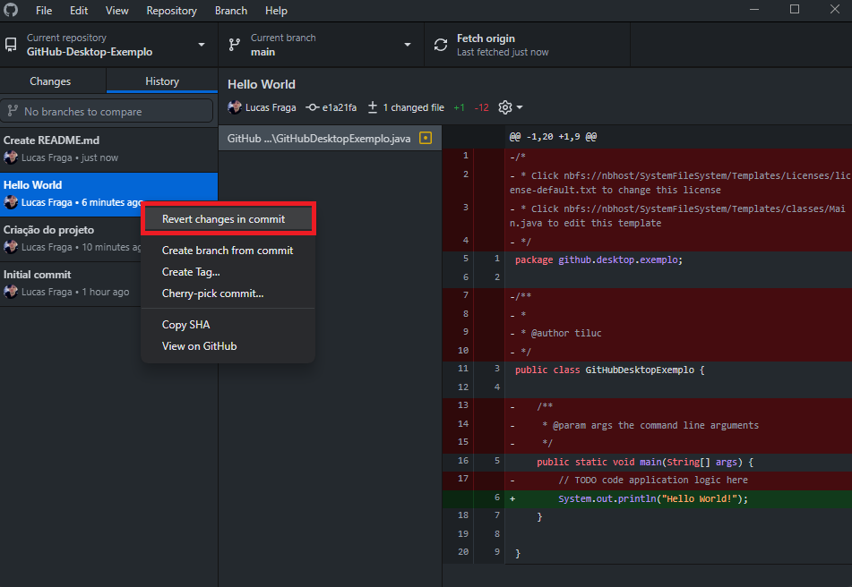Clique ou toque para ampliar.
Figura 40 – Tela de histórico no GitHub Desktop
Fonte: GitHub Desktop (2023)
Tela do repositório no GitHub Desktop com aba History ativada mostrando o menu suspenso sobre o commit “Hello World” destacando a opção Revert changes in commit.
Após isso, um novo commit será adicionado com a mensagem “Revert Hello World”. Isso significa que as mudanças registradas no commit “Hello World” já foram desfeitas. Agora, tudo o que você precisa é sincronizar isso com o repositório remoto. Então, mais uma vez, clique na ação Push origin.
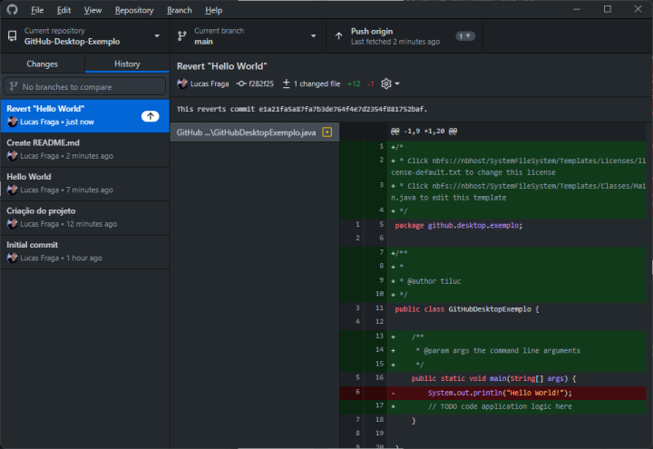Clique ou toque para ampliar.
Figura 41 – Tela de histórico no GitHub Desktop
Fonte: GitHub Desktop (2023)
Tela mostrando a aba History ativada e um novo commit Revert Hello World na lista.
Agora que você já aprendeu os principais comandos e processos de versionamento, utilize o GitHub Desktop para clonar o repositório “Git Exemplo”, criado na prática anterior.
Este conteúdo começou tratando dos principais comandos utilizados no processo de versionamento de software com Git. Essa base servirá a você de curinga para lidar com qualquer tipo de repositório versionado em Git e em qualquer sistema operacional que você esteja operando, seja Windows, seja Linux, seja Mac.
É importante manter o registro de versionamento frequente para evitar problemas no desenvolvimento de projetos de software. Então, sempre que implementar alguma funcionalidade nova, após fazer os devidos testes, procure executar, logo em seguida, os comandos git add . e git commit -m “Resumo sobre o que foi implementado”.
Você usará muitos esses comandos no dia a dia como programador. Então, para criar esse hábito, procure anotar os principais comandos em um local onde você tenha fácil acesso para consultá-los sempre que necessário e faça o versionamento de todos os seus projetos.
A ideia é criar o hábito para que o uso dos comandos se torne mais natural no seu dia a dia. Uma dica é que essas anotações estejam sempre por perto. Para isso, você pode usar post-its, blocos de notas ou mesmo o software de notas adesivas do Windows. Com o tempo, você deve tornar-se mais independente dessas ferramentas, mas tudo dependerá da sua dedicação e das práticas no dia a dia.
Após finalizar um longo dia de trabalho, não esqueça de garantir que as informações tenham sido copiadas para o repositório remoto com o comando git push -u origin master. Caso esteja lidando com repositórios remotos do GitHub, você ainda pode recorrer ao uso de ferramentas com interfaces gráficas, como o GitHub Desktop para realizar o processo com alguns cliques.
Para finalizar este conteúdo, veja uma última dica: aproveite os projetos de software que você desenvolveu até aqui e faça o versionamento deles com o GitHub. Assim, você começará a construir o seu portfólio como desenvolvedor e terá guardado todos os seus projetos em um local seguro, caso precise algum dia. Como bônus, você já pode ir praticando tudo o que aprendeu neste conteúdo.
Em caso de dúvidas, consulte seu tutor!